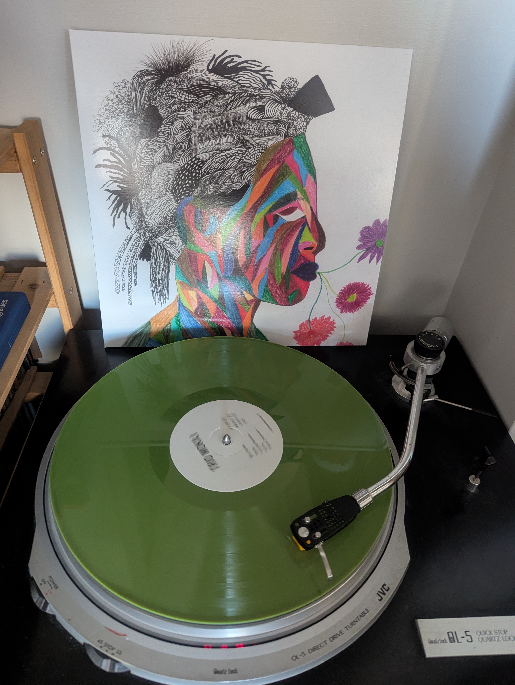
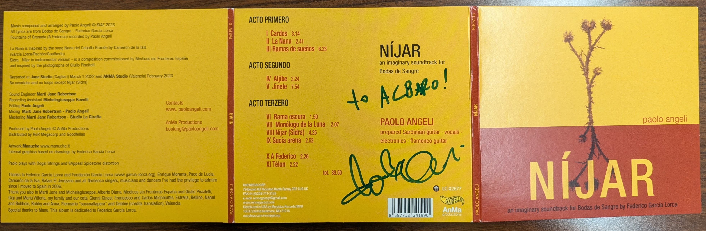

24 March, 2025
Having recently become a Secret Planet member, I was excited to use my first token on a show by a guitarist praised by Pat Metheny, even if I had never heard his music. An online search drove me to his Tiny Desk Concert, and I was sold. The Drake provided an intimate setting where, on two occasions, a man and his guitar took me on a gentle, rhythmic voyage through vast expanses.

What most surprised me about Nathaniel Braddock's performance was the extent of African influence (primarily West African) on his music. He painted intriguing and expansive soundscapes through gentle, melodic interpretations. Most were his compositions, and a couple were from West African musicians I did not know. He also fronts various groups with distinct sounds grounded on African and American fingerstyle guitar playing. I spoke with him briefly after the show and purchased a newly released LP from his project Trio Mokili (with the incredible Amherst percussionist Makaya McCraven and the bassist Junius Paul), which is fantastic! They rock as a power trio, with heavy and groovy covers by African composers across the continent. I only recognized Fela Kuti's “Colonial Mentality”(from when the Nigerian army brutalized his home and family, including his mother) and the Ethiopian jazz sounds of Mulatu Astatke, but the record also includes music by Thomas Mapfumo (Zimbabwe), Boubacar Traoré (Mali), and Francis Bebey (Cameroon). He also gave me a free CD sample of his solo guitar playing which more closely reflects his excellent show at the Drake.

Paolo Angeli told the audience that he is a guitar player, and the instrument he plays (a prepared Sardinian guitar) looks like one, even if it is much more than that. The instrument he prepared has hammers he plays with his feet that add a bassline, it has propellers and springs, strings that sound like a harp and others that sound like a sitar, and these strange extensions that give a metallic sound, which he says cannot be tuned and are a sort of tribute to Sun Ra. He plays it with his feet, with his hands, sometimes with one bow or two, and he sings. The concert was a non-stop hourlong voyage that evoked travels along the Mediterranean Sea, with occasional pauses for a beer (as he described it). Reading the liner notes of his CD, I read that part of what he played was commissioned by MSF Spain to go with photos by Giulio Pscitelli, which made the idyllic voyage across the Mediterranean carry much heavier weight. Paolo Angeli sang mainly in Spanish, as it was mostly based on his record Níjar - “an imaginary soundtrack for [Federico García Lora's] “Bodas de Sangre.” Angeli ended the show playing “Corsicana” (also played in the Tiny Desk Concert), his imagining of Tom Waits drunk in Sardinia engaging with cantu a tenòre and processed through Marc Ribot rock sensibilities. Angeli's bassu singing reminded me of Gavino Murgia's singing with Rabih Abou Khalil. It was delightful to speak with him in Spanish after the show, even if he misspelled my name :).
On a final note, Paolo Angeli's record reminded me of Alexis Cuadrado who also produced an incredible tribute to Federico Garcia Lorca (albeit different poems) - A Lorca Soundscape. Lorca inspires fabulous musicianship.
02 August, 2023
The Massachusetts House and Senate recently approved a $56.2 billion FY 2024 budget, which was sent to Governor Maura Healey. The compromise budget removed the House's proposal for an online lottery - thankfully. As of today, Gov. Healey has not yet signed it, and I hope she does not revive the idea, as she has stated her support for it.
Massachusetts residents already spend the largest amount of money on the lottery in the whole USA, nearly doubling the runner up (New York). Usual estimates state that residents spend upwards of $800 per year on the lottery, but even this is an underestimate, as the per capita calculations use the entire population for the denominator, when only adults are allowed to purchase lottery tickets. The lottery recently announced that they had collected the largest amount of money in their 51-year history with an estimated revenue of $6.131 billion. Using thee 2022 Census data, there are almost 7 million people in MA, and over 80% are over the age of 18. Using data from the Massachusetts Gambling Baseline General Population Survey done in FY 2014, an estimated 61.7% of adults buy lottery tickets. Using these numbers, we find that there are 5.641 million adults in MA, of whom 3.481 million people buy lottery tickets. This means that if every lottery buying adult spent the same amount of money on the lottery, over one year, every lottery buyer spent $1,761, or $147 per month on lottery products. Further, this masks the fact that lottery expenditures are highly concentrated - in other words, some people spend very little on the lottery, and a small group spends exorbitant amounts on it.
In the future I will compare these expenditures with those on other goods and services, but suffice it to say for now, that people in Massachusetts already spend too much disposable income on the lottery. And research suggests that some of the people who spend the most, tend to be poor. Should the state expand this tax on the poor to give no-strings-attached funds to local governments? I think not. Moreover, as I hope to explore later, the lottery is by design, made to increases economic inequality by concentrating the funds of many in the hands of the few. For now, I hope Gov. Healey will drop her support for an online lottery.
12 July, 2023
I've been meaning to practice writing my thoughts more frequently, and decided to start today, writing about the Holyoke Pulbic Library bathrooms. Since April and until about two weeks ago, I had been working on an almost daily basis at the Holyoke Public Library. One of the quirks is that the library bathrooms are somewhat restricted. To access them you need to ask for a key, and they try to make sure you don't use it for very long. The justification is to prevent drug users from "shooting up" in the restroom. The only restroom I was allowed was on the fourth floor, and I had to ask the librarian for the key. Many times there was no librarian on the fourth floor, and once I was told by her that it was too close to closing time (20 minutes until closing), and I wasn't allowed to use it. That day I decided to switch libraries and now mostly work at the South Hadley Public library (which is nicer in many ways).
Today I returned to the Holyoke library, because it opens earlier and I had an early meeting. There is now a security guard at the entrance (who does regular rounds around the library), and if you need the restroom, he hands out the key after scanning your library card (he was very friendly about it all). As it was explained to me, the reason is that there were many drug users using the bathrooms, and they want to create a safe environment in the library for families and children to come to. The motivations are understandable, but I'm unconvinced that restricting access to the bathroom is going to bring children and families to the library. The park surrounding the library has plenty of people who seem to be drug users, and that's probably because the library is in a poor and troubled neighborhood in one of the poorest towns in Massachusetts. I understand how this can scare off families, but I also believe that using the bathroom is a human right, whether you use drugs or not. And the struggle to attract children and families to the library is not solved by restricting bathroom access. I don't have the solution, but perhaps some work could be done with the community (including the people at the park) to come up with ways to make the area feel safe and welcoming. Or perhaps some additional bathrooms could be built, or a space for users near the park (there seem to be many vacant areas surrounding the library). I don't know. But the restrictions on bathroom use have made me feel unwelcome at the Holyoke library.